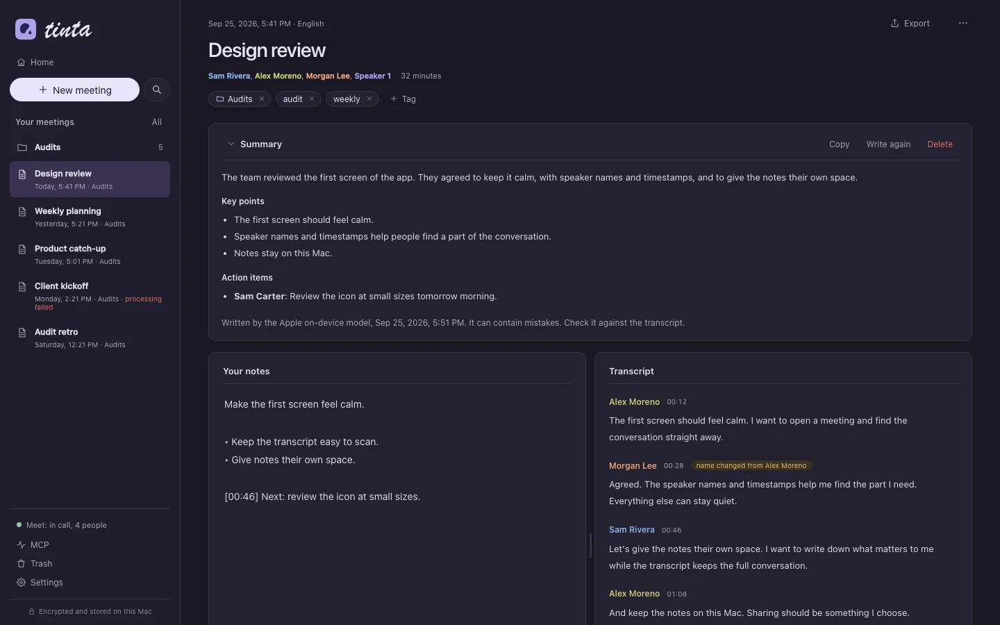
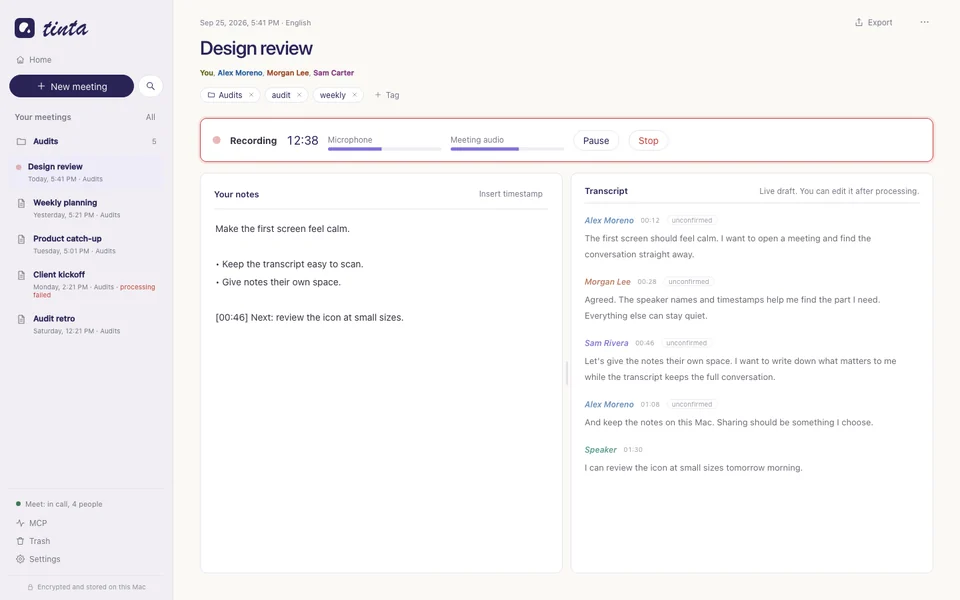

v0.3.1pilotmacOSApache-2.0
Meeting notes.
On your Mac.
Write your notes, get a transcript with speaker names, and keep everything on your own computer.
- 0 network requests after the model download
- 25 languages for transcription
- 7 days, then Tinta deletes the audio
Tinta is a pilot in active development. Expect bugs and changes. Report an issue.

01 / features
What Tinta does
You write the notes. Tinta makes the transcript, names the speakers, and writes a summary. Tinta has no chat and no cloud AI.
-
Notes and transcript side by side
Write your notes while the draft transcript appears. Insert a timestamp with one click.
-
Local transcription
Parakeet v3 runs on the Apple Neural Engine. It supports English, Spanish, and 23 other European languages. Tinta detects the language.
-
Speaker names
Tinta separates the voices. On Google Meet, a small Chrome extension reads who speaks. In the Zoom and Microsoft Teams desktop apps, Tinta reads who speaks from the call window (beta). You can confirm, correct, merge, or split speakers.
-
Next meetings
Tinta reads the calendars on your Mac, with no sign-in. A reminder shows 1 minute before each call. Click Join and take notes to join and start.
-
Call detection
Tinta detects calls in Google Meet, Zoom, and Microsoft Teams, and offers to record them. It stops 3 seconds after you leave.
-
Local summaries
The Apple on-device model writes an overview, key points, decisions, and action items from your notes and the transcript. This needs macOS 26 and Apple Intelligence.
-
Your library
Search, folders, and tags. Export to Markdown, JSON, SRT, and VTT.
-
Trash
Deleted meetings stay in the trash for 7 days. You can restore them in that time.
-
Import from Granola
Bring your Granola export into Tinta, with notes, transcripts, and speaker names.
-
MCP server
Connect Claude or another MCP client to your meetings when you choose to. Tinta records every MCP change, and you can undo it.
02 / screens
Before and during the call


03 / privacy
Stays on your Mac
Tinta has no server and no cloud service. After the one-time model download, Tinta makes no network requests.
- processing
- Transcription, speaker separation, and summaries run on your Mac. Tinta has no server and no cloud service.
- network
- Tinta downloads the speech models once (about 500 MB). After that, it makes no network requests: no analytics, no crash reports, and no update checks.
- storage
- SQLCipher encrypts the library, and AES-GCM encrypts the audio. The key is in your macOS Keychain. Time Machine does not back up the library.
- audio
- By default, Tinta deletes the audio 7 days after a meeting. In Settings, you can set 0 to 30 days. You can also delete the audio of one meeting at once.
- summaries
- The Apple on-device model writes the summaries. Tinta does not use Private Cloud Compute or any other server. A summary can contain mistakes, so check it against the transcript.
- browser extension
- The Meet extension reads only participant names, who speaks, and whether your microphone is muted. It does not read captions, chat, or audio.
- zoom and teams
- Tinta detects a call from the use of the microphone. It does not read the audio of the app to detect the call. With names from Zoom and Teams (beta), Tinta reads the participant names, who speaks, and the mute state from the call window. This needs Accessibility access. Tinta does not keep other text of the window.
- mcp
- MCP access is local, and it is off until you turn it on. An AI client that reads your meetings sends that content to its own model provider. Tinta records every MCP change, so you can undo it.
Always tell people that you record. Tinta does not tell other people in a call that you record. You must tell them.
04 / how it works
Six parts, one Mac
Each part runs as a local process. The helpers connect to the app over a private Unix socket. The app accepts only the signed helpers inside its own bundle.
your Macno network after the model download
Engine tinta-engine
Swift process. Capture, encrypted audio chunks, and the speech models through FluidAudio. It also runs the Apple on-device model for summaries.
- Parakeet TDT 0.6B v3transcriptionCC-BY-4.0
- Silero VADvoice activityMIT
- pyannote Community-1speaker separationCC-BY-4.0
pinned revisions, SHA-256 per file
Native host tinta-native-host
Chrome Native Messaging host for the Meet extension.
MCP server tinta-mcp
MCP over stdio. It forwards tool calls to the running app.
App Tauri 2 + React
Owns the encrypted library, name matching, retention, and the app socket.
Core tinta-core
Storage, keys, name matching, export, the Granola import, and the MCP tools.
Encrypted library
- SQLCipher database
- AES-GCM audio
- key in the Keychain
window: notes, transcript, summary
05 / developers
Connect an MCP client
Open MCP in the sidebar and turn on "Allow MCP clients to read and change meetings". Tinta must be open. The tools can list, search, and read meetings. They can also change titles, tags, folders, notes, summaries, speaker names, and transcript text.
Undo log. Tinta records every MCP change. The MCP screen lists every request and lets you undo each change. Deletions through MCP go to the trash.
Meeting text can contain instructions from other people. Do not let an AI client act on them.
19 tools
read list_meetings, search_meetings, get_meeting, get_notes, get_summary, get_transcript, list_speakers
change set_title, add_tags, remove_tags, move_to_folder, rename_speaker, merge_speakers, fix_transcript_text, edit_notes, update_summary, delete_meeting, delete_audio, set_audio_retention
claude mcp add tinta /Applications/Tinta.app/Contents/MacOS/tinta-mcp{
"mcpServers": {
"tinta": { "command": "/Applications/Tinta.app/Contents/MacOS/tinta-mcp" }
}
}To give a meeting to an AI client, click … on the meeting, then Copy the meeting ID. The first 8 characters of the ID are enough when they are unique.
06 / requirements
Requirements
- mac
- A Mac with Apple Silicon (M1 or newer) and macOS 14.2 or later. 16 GB of memory is recommended.
- disk
- About 1 GB of free disk space for the app and the speech models.
- google meet
- Google Chrome, for speaker names on Google Meet.
- zoom, teams
- The Zoom Workplace or Microsoft Teams desktop app. Tinta does not read Zoom or Teams calls in a browser.
- summaries
- macOS 26 or later with Apple Intelligence turned on.
07 / install
Build it from source
Tinta has no signed download yet. Build the app on your Mac.
-
Install the Xcode Command Line Tools, Rust, Node.js 20 or later, and pnpm. This command installs the Xcode Command Line Tools:
xcode-select --install -
Clone the repository.
git clone https://github.com/pepebndc/tinta.git && cd tinta -
Build the app.
./scripts/build.sh -
Move
target/release/bundle/macos/Tinta.appto your Applications folder.mv target/release/bundle/macos/Tinta.app /Applications/ -
Open Tinta. macOS blocks apps without Apple notarization. Open System Settings, then Privacy & Security, and click Open Anyway.
-
If macOS asks whether Tinta can use its key in the Keychain, click Always Allow.
Then the first-run setup guides you: your name, the speech models, the microphone, and the Chrome extension.
08 / faq
Questions
Does Tinta send my meetings to a server?
No. Tinta has no server and no cloud service. After the model download, it makes no network requests. If you connect an MCP client, that client sends the content that it reads to its own model provider.
Does Tinta tell the other people in the call that I record?
No. Always tell them before you record.
Why is there no download?
The app has no Developer ID signature or Apple notarization yet. Build it from source with the steps above.
Which languages does Tinta support?
Transcription supports English, Spanish, and 23 other European languages. Tinta detects the language. Summaries support English, Spanish, and the other Apple Intelligence languages.
Can I record Zoom or Teams in a browser?
No. Tinta reads Zoom and Teams calls only in the Zoom Workplace and Microsoft Teams desktop apps.
How stable is Tinta?
Tinta is a pilot. Processing, the library, the Granola import, and MCP work in tests. Live capture works in local tests, and the first real meetings are in progress. Export the meetings that matter.